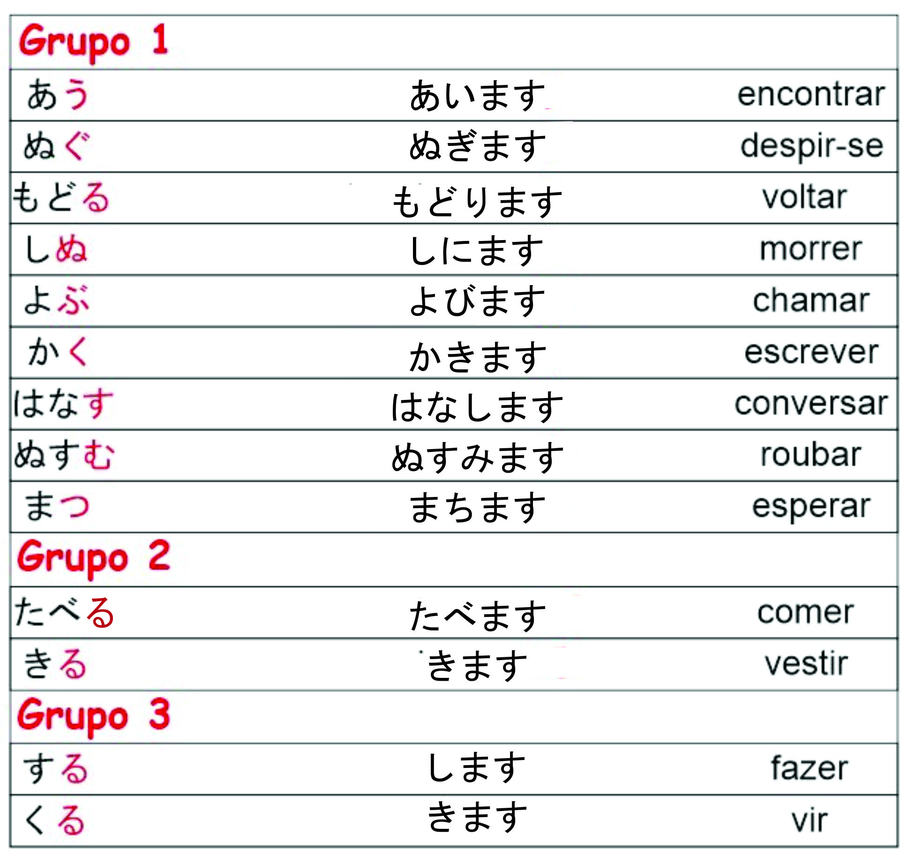

Primeira flexão de verbo: FORMA MASU
Assim como já vimos antes, afirmações sem utilizar o “desu” torna a frase informal, portanto após substantivos colocamos o “desu” para afirmar que algo é alguma coisa formalmente. Tendo isto em mente, a partir de agora tenha consciência que os verbos também se comportam assim, verbos nas formas de dicionário não são formais. Vamos ver como deixá-los formais agora. ^^
Espero que tenha entendido que verbos são separados em grupos, então cada grupo tem sua forma de flexionar.

Como podemos ver, cada grupo tem seu próprio padrão de flexionar. Para os do grupo 1 passamos os verbos que terminam na terceira letra de seu silabário (A I U E O) basta pegar a terceira letra e passar para a segunda letra do silabário (A I U E O). Veja que este padrão se repete nos demais silabários. MU -> MI / BU = BI. A terceira letra de cada silabário vai se tornar a segunda e será adicionado “MASU”.
Talvez a dúvida aqui seja a seguinte; “toru” é flexionado assim “torimasu”, o “taberu” não deveria ser “taberimasu”?
O “taberu” é um verbo do grupo 2, a diferença é também porque enquanto o “toru” termina com “oru” o “taberu” termina com “eru”, a maioria dos verbos que terminam com “eru” vão ser flexionados da mesma forma que o taberu!
O “suru” e” kuru”, são verbos irregulares, portanto eles possuem sua própria regra. Conforme nossos estudos avançam vamos tornando essas flexões de verbos naturais na nossa cabeça. Então não se preocupe! ^^
Abraços e até a próxima!